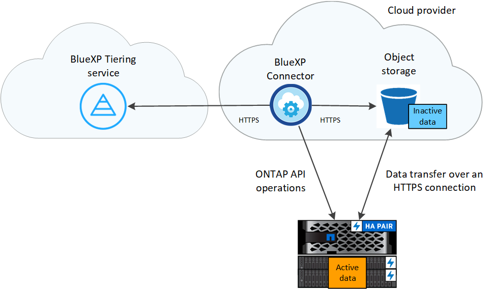

Manos a la obra
Manos a la obra
Más información sobre la organización en niveles de BlueXP
 Sugerir cambios
Sugerir cambios
El servicio de organización en niveles de BlueXP de NetApp amplía tu centro de datos a la nube al organizar en niveles automáticamente los datos inactivos desde los clústeres de ONTAP on-premises hasta el almacenamiento de objetos. Esto libera un valioso espacio en el clúster para más cargas de trabajo sin tener que realizar cambios en la capa de la aplicación. La organización en niveles de BlueXP puede reducir los costes de su centro de datos y le permite cambiar de un modelo de gastos de capital a un modelo OPEX.
El servicio de organización en niveles de BlueXP aprovecha las funcionalidades de FabricPool. FabricPool es una tecnología Data Fabric de NetApp que permite la organización en niveles automatizada de los datos en un almacenamiento de objetos de bajo coste. Los datos activos (activos) permanecen en el nivel local (agregados de ONTAP en las instalaciones), mientras que los datos inactivos (fríos) se mueven al nivel de cloud, todo ello conservando las eficiencias de los datos de ONTAP.
Originalmente compatible con sistemas AFF, FAS y ONTAP Select con agregados íntegramente de SSD, a partir de ONTAP 9.8, puede organizar los datos en niveles de agregados compuestos por HDD además de SSD de alto rendimiento. Consulte "Las consideraciones y requisitos para usar FabricPool" para obtener más detalles.
La organización en niveles de BlueXP puede configurarse para clústeres de un solo nodo, clústeres configurados de alta disponibilidad, clústeres en configuraciones de Tiering Mirror y configuraciones de MetroCluster mediante FabricPool Mirror. Las licencias de organización en niveles de BlueXP se comparten entre todos tus clústeres.
Funciones
La organización en niveles de BlueXP ofrece automatización, supervisión, informes y una interfaz de gestión común:
-
Gracias a la automatización, resulta más sencillo configurar y gestionar los datos Organización en niveles desde clústeres de ONTAP en las instalaciones al cloud
-
Puede elegir el nivel de acceso o la clase de almacenamiento del proveedor de cloud predeterminado, o utilizar la gestión del ciclo de vida para asignar un nivel más rentable a los datos antiguos organizados en niveles
-
Puede crear conexiones a almacenes de objetos adicionales que se puedan usar para otros agregados del clúster
-
Con la interfaz de usuario de se pueden arrastrar almacenes de objetos a un agregado para la organización en niveles y para el mirroring de FabricPool
-
Un único panel elimina la necesidad de disponer de forma independiente Gestione FabricPool en varios clústeres
-
Los informes muestran la cantidad de datos activos e inactivos en cada clúster
-
El estado de una organización en niveles le ayuda a identificar y corregir problemas a medida que ocurren
-
Si tiene sistemas Cloud Volumes ONTAP, los encontrará en la página Clusters para que obtenga una vista completa de la organización en niveles de los datos en su infraestructura de cloud híbrido
Para obtener más información sobre el valor que ofrece la organización en niveles de BlueXP, "Echa un vistazo a la página de organización en niveles de BlueXP en el sitio web de BlueXP".

|
Los sistemas Cloud Volumes ONTAP son de solo lectura desde la organización en niveles de BlueXP. "Configuras la organización en niveles para los sistemas Cloud Volumes ONTAP desde el entorno de trabajo en BlueXP". |
Proveedores de almacenamiento de objetos admitidos
Puede organizar los datos inactivos en niveles desde un sistema ONTAP en las instalaciones a los siguientes proveedores de almacenamiento de objetos:
-
Amazon S3
-
Microsoft Azure Blob
-
Google Cloud Storage
-
StorageGRID de NetApp
-
Almacenamiento de objetos compatible con S3 (por ejemplo, Minio)
Las licencias de organización en niveles de BlueXP también se pueden compartir con tus clústeres que organizan los datos en niveles en IBM Cloud Object Storage. La configuración de FabricPool debe configurarse mediante System Manager o la CLI de ONTAP, pero "La licencia para este tipo de configuración se completa mediante la organización en niveles de BlueXP."

|
Puede organizar los datos en niveles desde NAS Volumes en el cloud público o en clouds privados, como StorageGRID. En el caso de la organización en niveles de los datos a los que se accede mediante protocolos SAN, NetApp recomienda utilizar clouds privados debido a consideraciones de conectividad. |
Niveles de almacenamiento de objetos
Los clústeres de ONTAP pueden organizar los datos inactivos en niveles en un único almacén de objetos o en varios almacenes de objetos. Cuando configura la organización en niveles de datos, tiene la opción de añadir un nuevo bloque/contenedor o seleccionar un bloque/contenedor existente, junto con una clase de almacenamiento o nivel de acceso.
La organización en niveles de BlueXP utiliza el nivel de acceso/clase de almacenamiento predeterminados del proveedor de nube para tus datos inactivos. Sin embargo, puede aplicar una regla de ciclo de vida para que los datos se transiciones automáticamente de la clase de almacenamiento predeterminada a otra clase de almacenamiento después de un determinado número de días. Esto puede ayudarle a reducir los costes al mover datos inactivos a almacenamiento más económico.
|
|
No se pueden seleccionar reglas del ciclo de vida para datos organizados en niveles en sistemas StorageGRID o almacenamiento compatible con S3. |
Precios y licencias
Paga la organización en niveles de BlueXP a través de una suscripción de pago por uso, una suscripción anual, una licencia «bring-your-own» de BlueXP o una combinación de esta. Hay una prueba gratuita de 30 días disponible para su primer clúster si no tiene una licencia.
Al organizar los datos en niveles en StorageGRID, no hay ningún coste. No se requiere ni una licencia BYOL ni registro de PAYGO.
Como la organización en niveles de BlueXP preserva las eficiencias del almacenamiento del volumen de origen, usted paga los costes de almacenamiento de objetos del proveedor de cloud para los datos organizados en niveles después de las eficiencias de ONTAP (para la menor cantidad de datos después de que se haya aplicado la deduplicación y la compresión).
prueba gratuita de 30 días
Si no tienes una licencia de organización en niveles de BlueXP, la prueba gratuita de 30 días de la organización en niveles de BlueXP comienza cuando configuras la organización en niveles en el primer clúster. Cuando finalice la prueba gratuita de 30 días, tendrás que pagar la organización en niveles de BlueXP mediante una suscripción de pago por uso, una suscripción anual, una licencia BYOL o una combinación de ellas.
Si su prueba gratuita finaliza y no se ha suscrito o agregado una licencia, ONTAP ya no organiza los datos inactivos en niveles para el almacenamiento de objetos. Todos los datos previamente organizados en niveles siguen siendo accesibles; lo que significa que se pueden recuperar y utilizar estos datos. Cuando se recuperan, estos datos se mueven de nuevo al nivel de rendimiento del cloud.
Suscripción de pago por uso
La organización en niveles de BlueXP ofrece licencias basadas en el consumo en un modelo de pago por uso. Después de suscribirse a través del mercado de su proveedor de cloud, pagará por GB los datos organizados en niveles: No hay un pago por adelantado. Su proveedor de cloud se le factura con cargo mensual.
Debe suscribirse aunque tenga una prueba gratuita o si lleva su propia licencia (BYOL):
-
La suscripción garantiza que no se produzca ninguna interrupción en el servicio una vez que finalice la prueba gratuita.
Cuando finalice la prueba, se le cobrará cada hora según la cantidad de datos que organice.
-
Si establece un nivel de más datos que el permitido por su licencia de BYOL, los datos en niveles continúan con su suscripción de pago por uso.
Por ejemplo, si tiene una licencia de 10 TB, toda la capacidad que supere los 10 TB se cobrará a través de la suscripción de pago por uso.
No se te cobrará mediante tu suscripción de pago por uso durante la prueba gratuita o si no has superado la licencia BYOL de organización en niveles de BlueXP.
Contrato anual
La organización en niveles de BlueXP ofrece un contrato anual al organizar en niveles los datos inactivos en Amazon S3 o Azure. Está disponible en periodos de 1, 2 o 3 años.
Actualmente, los contratos anuales no se admiten cuando la organización en niveles en Google Cloud.
Con su propia licencia
Trae tu propia licencia al comprar una licencia organización en niveles de BlueXP de NetApp (anteriormente conocida como licencia de «Cloud Tiering»). Puede comprar licencias de períodos de 1, 2 o 3 años y especificar cualquier cantidad de capacidad de organización en niveles (empezando por un mínimo de 10 TiB). La licencia de organización en niveles BYOL BlueXP es una licencia flotante que se puede utilizar en varios clústeres de ONTAP en las instalaciones. Todos los clústeres on-premises pueden utilizar la capacidad total de organización en niveles que definas en la licencia de organización en niveles de BlueXP.
Después de comprar una licencia de organización en niveles de BlueXP, necesitarás utilizar la cartera digital de BlueXP en BlueXP para añadir la licencia. "Descubre cómo utilizar una licencia BYOL para la organización en niveles de BlueXP".
Como se ha indicado anteriormente, le recomendamos que establezca una suscripción de pago por uso, incluso si ha adquirido una licencia de BYOL.
|
|
A partir de agosto de 2021, la antigua licencia FabricPool fue sustituida por la licencia Cloud Tiering. "Obtén más información sobre cómo difiere la licencia de organización en niveles de BlueXP de la licencia de FabricPool". |
Funcionamiento de la organización en niveles de BlueXP
La organización en niveles de BlueXP es un servicio gestionado por NetApp que utiliza la tecnología FabricPool para organizar automáticamente en niveles los datos inactivos (fríos) de tus clústeres de ONTAP en las instalaciones en un almacenamiento de objetos en tu nube pública o nube privada. Las conexiones a ONTAP se realizan desde un conector.
La siguiente imagen muestra la relación entre cada componente:

En general, la organización en niveles de BlueXP funciona así:
-
Descubre su clúster en las instalaciones desde BlueXP.
-
Para configurar la organización en niveles, debe proporcionar detalles sobre su almacenamiento de objetos, como el bloque/contenedor, una clase de almacenamiento o nivel de acceso, y las reglas de ciclo de vida de los datos organizados en niveles.
-
BlueXP configura ONTAP para que utilice el proveedor de almacenamiento de objetos y determina la cantidad de datos activos e inactivos del clúster.
-
La política de organización en niveles y los volúmenes se aplican a esos volúmenes.
-
ONTAP inicia la organización en niveles de los datos inactivos en el almacén de objetos tan pronto como los datos han alcanzado los umbrales que se deben considerar inactivos (consulte Políticas de organización en niveles del volumen).
-
Si ha aplicado una regla de ciclo de vida a los datos escalonados (solo disponibles para algunos proveedores), los datos escalonados más antiguos se asignan a un nivel más rentable después de un determinado número de días.
Políticas de organización en niveles del volumen
Cuando selecciona los volúmenes que desea organizar en niveles, elige una volume Tiering policy que se aplicará a cada volumen. Una política de organización en niveles determina cuándo y si los bloques de datos de usuario de un volumen se mueven al cloud.
También puede ajustar el período de refrigeración. Este es el número de días en los que los datos del usuario en un volumen deben permanecer inactivos antes de considerarlos «activos» y moverlos a un almacenamiento de objetos. Para las políticas de organización en niveles que permiten ajustar el período de refrigeración, los valores válidos son de 2 a 183 días cuando se usa ONTAP 9.8 y posterior, y de 2 a 63 días para versiones anteriores de ONTAP; 2 a 63 es la práctica recomendada.
- Sin política (ninguna)
-
Mantiene los datos en un volumen en el nivel de rendimiento, lo que impide que se muevan al nivel de cloud.
- Snapshots frías (solo Snapshot)
-
ONTAP organiza los bloques de instantáneas inactivos en el volumen que no se comparten con el sistema de archivos activo al almacenamiento de objetos. Si se leen, los bloques de datos inactivos del nivel de cloud se activan y se mueven al nivel de rendimiento.
Los datos se organizan en niveles solo después de que un agregado alcance el 50 % de la capacidad y cuando los datos hayan alcanzado el periodo de refrigeración. El número predeterminado de días de enfriamiento es 2, pero puede ajustar este número.
Los datos recalentados se vuelven a escribir en el nivel de rendimiento únicamente si hay espacio. Si la capacidad del nivel de rendimiento está llena más del 70 %, se sigue accediendo a los bloques desde el nivel de cloud. - Datos de usuario fríos y snapshots (automático)
-
ONTAP organiza todos los bloques de datos fríos en el volumen (sin metadatos incluidos) en niveles para el almacenamiento de objetos. Los datos inactivos incluyen no solo copias Snapshot, sino también datos de usuarios inactivos del sistema de archivos activos.
Si las lecturas se leen al azar, los bloques de datos inactivos del nivel de cloud se activan y se mueven al nivel de rendimiento. Si las lecturas secuenciales, como las asociadas con análisis de índices y antivirus, los bloques de datos inactivos del nivel de cloud permanecen inactivos y no se escriben en el nivel de rendimiento. Esta política está disponible a partir de ONTAP 9.4.
Los datos se organizan en niveles solo después de que un agregado alcance el 50 % de la capacidad y cuando los datos hayan alcanzado el periodo de refrigeración. El número predeterminado de días de enfriamiento es 31, pero puede ajustar este número.
Los datos recalentados se vuelven a escribir en el nivel de rendimiento únicamente si hay espacio. Si la capacidad del nivel de rendimiento está llena más del 70 %, se sigue accediendo a los bloques desde el nivel de cloud. - Todos los datos de usuario (todos)
-
Todos los datos (no incluidos los metadatos) se marcan inmediatamente como fríos y por niveles en el almacenamiento de objetos lo antes posible. No es necesario esperar 48 horas hasta que se enfrían los bloques nuevos en un volumen. Tenga en cuenta que los bloques ubicados en el volumen antes de ajustar la normativa de todo requieren 48 horas de frío.
Si se leen, los bloques de datos inactivos del nivel de cloud permanecen activos y no se vuelven a escribir en el nivel de rendimiento. Esta política está disponible a partir de ONTAP 9.6.
Tenga en cuenta lo siguiente antes de elegir esta política de organización en niveles:
-
La organización en niveles de los datos reduce inmediatamente las eficiencias del almacenamiento (solo en línea).
-
Debe usar esta política solo si confía en que los datos en frío del volumen no cambiarán.
-
El almacenamiento de objetos no es transaccional y provocará una fragmentación significativa si se somete a cambios.
-
Tenga en cuenta el impacto de las transferencias de SnapMirror antes de asignar la política de organización en niveles de todos a los volúmenes de origen en las relaciones de protección de datos.
Dado que los datos se organizan en niveles de inmediato, SnapMirror lee los datos del nivel de cloud en lugar del nivel de rendimiento. Como resultado, las operaciones de SnapMirror serán más lentas, posiblemente ralentizarán otras operaciones de SnapMirror más adelante en la cola, aunque utilicen diferentes políticas de organización en niveles.
-
El backup y la recuperación de datos de BlueXP se ven afectados de forma similar por los volúmenes conjuntos con una política de organización en niveles. "Consulta las consideraciones sobre las políticas de organización en niveles con el backup y la recuperación de BlueXP".
-
- Todos los datos de usuario de DP (respaldo)
-
Todos los datos de un volumen de protección de datos (sin incluir los metadatos) se mueven inmediatamente al nivel de cloud. Si se leen, los bloques de datos inactivos del nivel de cloud permanecen inactivos y no se vuelven a escribir en el nivel de rendimiento (a partir de ONTAP 9.4).
Esta política está disponible para ONTAP 9.5 o anterior. Se reemplazó por la política de organización en niveles todo a partir de ONTAP 9.6.